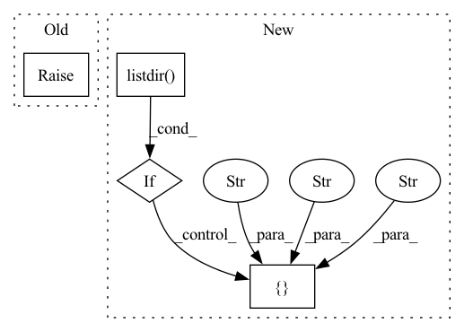

Pattern ID :31329
Before Change
// IMPLEMENT_THIS : Please define a `self.sampling_rate` for this pipeline
// to automatically read the input correctly
self.sampling_rate = 16000
raise NotImplementedError(
"Please implement AutomaticSpeechRecognitionPipeline __init__ function"
)
After Change
// to automatically read the input correctly
filepath = snapshot_download(model_id)
sys.path.append(filepath)
if "requirements.txt" in os.listdir( filepath) :
subprocess.check_call(
[
sys.executable,
"-m" ,
"pip" ,
"install",
"-r" ,
os.path.join(filepath, "requirements.txt")In pattern: SUPERPATTERN
Frequency: 3
Non-data size: 4
Instances Fragment ID: 91916282
Project Name: huggingface/huggingface_hub
Commit Name: 0ce8377367e9d07fca785d291b1f0665fc5bd51b
Time: 2021-07-16
Author: osanseviero@users.noreply.github.com
File Name: api-inference-community/docker_images/superb/app/pipelines/automatic_speech_recognition.py
M Class Name: AutomaticSpeechRecognitionPipeline
N Class Name: AutomaticSpeechRecognitionPipeline
M Method Name: __init__(2)
N Method Name: __init__(2)
M Parent Class: Pipeline
N Parent Class: Pipeline
M File Name: api-inference-community/docker_images/superb/app/pipelines/automatic_speech_recognition.py
N File Name: api-inference-community/docker_images/superb/app/pipelines/automatic_speech_recognition.py
M Start Line: 16
M End Line: 18
N Start Line: 19
N End Line: 35
Before Change
def main():
raise NotImplementedError
if __name__ == "__main__":After Change
def main():
guide_rst = os.listdir( DOCSRC_GUIDES)
for file in guide_rst:
if file.endswith(".rst") and "guide" in file:
args = ["rm" , "-rf" , f"{DOCSRC_GUIDES}/{file}" ]
subprocess.run(args)
guides = os.listdir("guides") Fragment ID: 91916298
Project Name: relevanceai/relevanceai
Commit Name: 8d97512e326fa409f778fe461879bf8cb252d890
Time: 2022-04-03
Author: joseph.twin@relevance.ai
File Name: guides/generate.py
M Class Name: AnonimousClass
N Class Name: AnonimousClass
M Method Name: main(0)
N Method Name: main(0)
M Parent Class:
N Parent Class:
M File Name: guides/generate.py
N File Name: guides/generate.py
M Start Line: 7
M End Line: 7
N Start Line: 18
N End Line: 37
Before Change
class Pipeline(ABC):
@abstractmethod
def __init__(self, model_id: str):
raise NotImplementedError("Pipelines should implement an __init__ method")
@abstractmethod
def __call__(self, inputs: Any) -> Any:After Change
def __init__(self, model_id: str):
filepath = snapshot_download(model_id)
sys.path.append(filepath)
if "requirements.txt" in os.listdir( filepath) :
subprocess.check_call(
[
sys.executable,
"-m" ,
"pip",
"install" ,
"-r" ,
os.path.join(filepath, "requirements.txt") Fragment ID: 91916272
Project Name: huggingface/huggingface_hub
Commit Name: b165bb655f8470290807947ac879d215bb3b0d1f
Time: 2021-08-03
Author: osanseviero@users.noreply.github.com
File Name: api-inference-community/docker_images/generic/app/pipelines/base.py
M Class Name: Pipeline
N Class Name: Pipeline
M Method Name: __init__(2)
N Method Name: __init__(2)
M Parent Class: ABC
N Parent Class: ABC
M File Name: api-inference-community/docker_images/generic/app/pipelines/base.py
N File Name: api-inference-community/docker_images/generic/app/pipelines/base.py
M Start Line: 8
M End Line: 8
N Start Line: 13
N End Line: 29